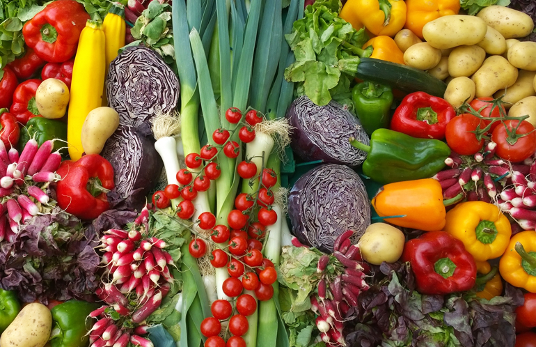

6 Ways to save our environment and planet Earth
Saving the planet sounds huge doesn’t it? And in essence, it is. But there are many simple ways you can do your bit to help. Check out this list of six easy ways to go green and do your bit to help! These are steps that anyone can and should take to help reduce the effect of years of abuse.
“You must be the change you wish to see in the world.”
Mahatma Gandhi
001/006
Use Reusable Bags and Containers

Plastic grocery-type bags that get thrown out end up in landfills or in other parts of the environment. These can suffocate animals who get stuck in them or may mistake them for food. Also, it takes a while for the bags to decompose. Whether you are shopping for food, clothes or books, use a reusable bag. This cuts down on litter and prevents animals from getting a hold of them. There are even some stores (such as Target) that offer discounts for using reusable bags! These bags are useful for things other than shopping as well. I have heard of people using reusable bags when they move! If you forget your bags at home, buy a new one. Better yet, keep a couple bags in your car so you never leave home without them (just make sure you remember you put them there)! If you are in a position where you need to use the plastic bags, reuse them the next time you go shopping, or use them for something else. Just do not be so quick to throw them out! There are some states that are outlawing or charging extra for using plastic bags. Using reusable bags helps the environment AND your budget!
002/006
Reduce, Reuse, Recycle

Be a mindful consumer to reduce your extra waste. Before making a purchase, ask yourself how your purchase will impact other people and the natural environment. This can be as simple as buying an entire jar of peanut butter, rather than individual servings; or as complicated as deciding the most environmentally-friendly car to buy. But don’t stress—start small. In general, avoid purchasing products with excess packaging. Oftentimes, food companies expend just as much energy creating the packaging for food products as is expended in producing the actual food. Don't buy what you don’t need. Buy for durability. For items you do buy, look for things which will last a lifetime. Search "buy it for life" to find forums and recommendations for durable products. Borrow or rent items you need only for brief or occasional use. Buy secondhand clothes and household items from thrift stores, consignment shops, and private sellers when you can. Use reusable items whenever possible to limit the trash in landfills. While disposable items are super convenient, anything made to only use one time and throw away should be avoided. Not only do they create more environmental waste, they end up costing you more money in the long run. Opt to use your own reusable shopping bags instead of the plastic bags provided by the store. It may mean more clean up, but try using your regular cups, plates, and utensils at your next birthday party or event. Most tap water in developed countries is safe to drink, which means that buying bottled water is unnecessary. Buy a glass or metal bottle and fill it with water. Next time you need batteries, get rechargeable ones instead of disposable. Most batteries can now be thrown out with the regular trash—thanks to a reduction in chemical use—however, they still take up space in landfills. Donate your old household items so someone else can reuse them. Don’t just throw your old stuff in the trash. Consider selling it or giving it away to someone who can use it. Donate clothes and household items that are in good condition to a charity or non-profit organization like a school or a church. Turn useless junk into something fun and cute, or fresh and funky. Upcycling is fun and good for the earth. Instead of throwing things away, give them another purpose by making jewelry, household accessories, or restyled clothing. For instance, you can turn an old T-shirt into a grocery bag, or use cinder blocks to make outdoor planters or bookshelves. Recycle to lower the amount of environmental waste you produce. Aim to recycle as much glass, metal, plastic, and paper as you can. If your area offers curbside recycling, use it. If your area doesn’t offer curbside service, or if you have items not accepted for the regular service, take a special trip to a recycling center that is convenient for you. Check the rules and regulations in your area to ensure you are recycling properly. For instance, some areas may not accept glass and some places may require you to separate your materials. If you are required to separate your materials beforehand, get your children involved if you have them. Children often enjoy separating items and this teaches them to be environmentally conscious as well.
003/006
Conserve Water

Bottled water is handy when you’re on the go, but why not buy one bottle and then refill it from the tap or your work’s water cooler. Around 90% of water bottles end up decomposing in landfills rather than being recycled. Make conscious choices to lower your consumption of water. Conserving water not only helps save our resources for future generations, it can save you money on your water bill as well. Little things you can do to save water include: Taking 5-minute showers or only filling the bathtub one-quarter to one-third of the way full. Turning off the faucet while you are brushing your teeth. Wash only full loads of laundry in the washing machine to reduce waste. Putting just a couple of dirty clothes into the washing machine uses extra electricity and wastes water. To save on electricity and reduce waste, wait until you have a full load of dirty clothes before running your machine. Run your dishwasher only when it is completely full. Dishwashers not only use a lot of water, they use extra energy to heat the water up. Expect to save over 45 kg of carbon pollution each year by only washing full loads. If you only have a few dishes to wash and are washing by hand, use a plug to fill the sink about one-quarter of the way full. Don’t allow the tap to continuously run while you wash and rinse. Install low-flow plumbing fixtures to help save water with every use. Consider putting low-flow faucets or faucet aerators in your kitchen and bathroom sinks, and low-flow shower heads and toilets in every bathroom in your home.
004/006
Save Electricity

Turn off electric items when they are not in use to save energy. A good rule of thumb is that if you aren’t using it, turn it off. This goes for lights, televisions, computers, printers, video game consoles and so on. Use a power strip to control multiple items with the flip of a single switch. You can plug all of your devices into one power source. This is especially useful for computers and entertainment system setups. When you're done, simply turn the power strip off with the switch. Unplug devices whenever possible to limit the flow of electricity. Leaving devices such as laptops, desktop computers, mixer-grinders, ovens, TVs etc., plugged in can use "phantom" energy. Many devices and appliances simply stay on standby or enter a sleep mode when they are turned off. These items still draw electricity when they are in this state. Adjust the temperature settings in your house. Set your systems to a slightly lower or higher temperature than it is outside, when you can. This makes it so your systems don’t have to work as hard. Plus, the warmer the heat, the more money it costs; and the same goes for your air conditioner—the colder the air, the more money you spend.[4] When the winter is too cold to set your thermostat just above the outside temperature, set it at the lowest temperature that is comfortable for your family. During hot summer weather, set your thermostat at the highest temperature that is comfortable for your family. For example, you might set it at 26 °C. Although you might not feel cool, it's far better than 32 °C! Use a fan or natural ventilation as often as you can to keep cool when it is hot outside. Wear extra layers and use a blanket to stay warm when it is cold outside. Switch to LED light bulbs in as many lights as you can. LED light bulbs do cost more than conventional light bulbs, but the benefits outweigh the cost. They use 25-85% less energy, last 3-25% longer, and are much better/safer for the environment. When replacing your bulbs, start with the lights that you use the most. Trade in your electric dryer for a good old-fashioned clothesline. Tumble dryers are among the biggest energy-users in most households, after the refrigerator and air conditioner. Air drying your clothes is environmentally friendly and still leaves your clothes smelling fresh. If you do use a dryer, make sure to clean the vent often for efficiency as well as safety.
005/006
Eat Sustainable Foods
Try eating less meat and dairy to help the environment. Domestic meat and dairy production requires a lot of natural resources. Eating less meat and dairy, and more plants, is one way you may be able to help the environment, and stay healthy yourself. If you are advised to maintain animal protein in your diet, look for more sustainable practices such as localized farms, or learn to hunt responsibly. Meatless Monday is a national non-profit public health campaign that encourages people to give up meat one day a week. Brew coffee in a regular coffee pot or French press to reduce waste. Try to avoid drinking coffee from individual-serving coffee pods. The mini pods of ground coffee for single-serve coffee makers create a lot of extra waste because they are designed to only be used one time and then thrown out. (Although some brands may be recycled after they are cleaned). Use a mug or other reusable cup for your coffee instead of a disposable cup. If you love the convenience of single-serve coffee and have already invested in a single-serve machine, look for a washable, reusable coffee pod that will fit your appliance. Buy your food locally to reduce pollution caused by transporting food. Transporting food from far-off locations takes a toll on the environment. Food must be shipped in trucks, by rail, flight, or by ship—all of which produce pollutants. Buying food that is sourced locally will help eliminate or reduce the environmental impact caused by transportation. It also goes without saying that local products are more fresh. Hence, they are higher in nutrient value. Visit farmer's markets to find local vegetables and fruits. Don't waste food. Plan your meals so that you don’t cook more than you will eat. Store your leftovers and use them up at one of your meals over the next few days. If you do have an overrun of food, such as after a party, share it with friends or neighbors.
006/006
Plant a Tree

There are multiple benefits to planting a tree in your garden. It is good for the environment both the land and the air, it can shade your home and cut back your air con usage and it can even increase the value of your property. One young tree can absorb CO2 at a rate of 5 kilograms every year. 10 years old tree can absorb 21 kilograms of CO2 per year. Trees also remove all other kinds of junk from the air, including sulfur dioxide, nitrogen oxides and small particles.You could make it an annual event where each family member plants a new tree.
Share The Knowledge!
Often, when people are damaging the environment, it is because they don’t have the facts, or haven’t considered a particular course of action. Share this list with your friends – if each of them takes on board just one point, the effect could be immense. And if they share it on too, think of the mass chain reaction. Let’s work together to save our planet and make it a better place to live.